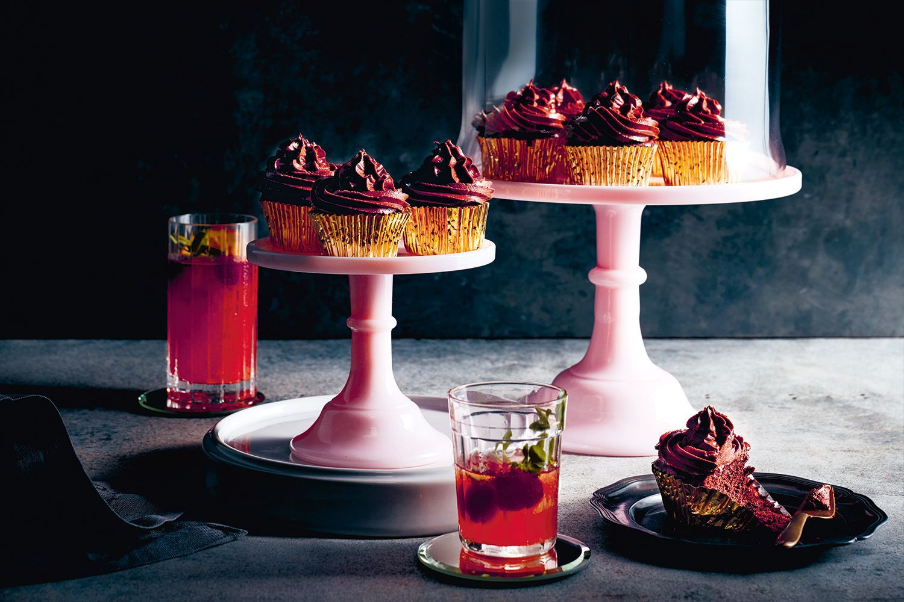

Four-ingredient chocolate cupcakes

These foolproof cupcakes are a quick and easy way to impress a crowd.
Ingredients
- 700g dark (70%) chocolate
- 1kg cream cheese, softened, chopped
- 12 eggs, separated
- 11/3 firmly-packed cups (330g) brown sugar
Methods
-
Preheat the oven to 150°C. Place cupcake papers in 2 x 12-hole cupcake pans. Place
500g chocolate in a heatproof bowl set.
-
Place 500g cream cheese in a separate bowl and beat with a spatula until smooth.
Add melted chocolate to cream cheese and beat to combine. Add egg yolks and 1 cup
(250g) sugar, and beat to combine.
-
In another bowl, whisk eggwhites until stiff peaks form.Fold one-third eggwhite into
cream cheese mixture to loosen, then gently fold in remaining eggwhite.
-
Divide mixture among cupcake pans and bake for 20 minutes or until a skewer inserted
into the centre comes out clean. Set aside to cool.
-
To make the icing, place remaining 200g chocolate in a heatproof bowl set over a
saucepan of gently simmering water stirring until melted and smooth.
-
Beat in remaining 1/3 cup (80g) sugar, 1 tbs water and a pinch of salt until smooth
and combined.
Enjoy Your Meal..